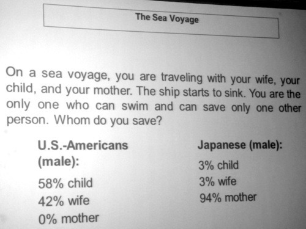

Grey weather aside, seems like Tuesday had a better shot at turning things around for the better @BerlinSchool. This time we had the pleasure of having Prof. Hellmut Schütte to thank for.
Speaking in a no-nonsense but humorous approach, Prof. Schütte made learning about the nitty gritty of doing business in Asia and understanding its market more enjoyable than I anticipated.
His way of teaching reminded me of Prof. Verdin, and I personally thought that one and a half day is too little to cover such gigantic topic like Understanding Asian Market (read: China) and its layer of complexity. Even for someone who’s been in the country for nearly seven years, China never cease to baffle me with its endless obscurity in doing things ’the Chinese way’.
Short takeaways that I found interesting were:
- Joint Ventures aren’t like marriage. It’s more like affairs. Difficult to manage and it usually ends in disintegration.
- Blue Ocean Strategy for Asia: innovation and cost reduction must be done at the same time in order to offer better value creation.
- Product released to the market should meet all SMART* criteria:
- Simple
- Maintenance-friendly
- Affordable
- Reliable
- Timely to market
When creating a product, at the end of the day, setting time constraint from the get go (as opposed to playing the waiting game after IPO), it actually benefits the team a lot in terms of productivity and efficiency. Releasing product in Beta and iterate based on consumer feedback is the smart way to go. This approach resonates well if one’s goal is to run a lean machine. And by doing so, companies have better chance to gain first mover advantage. Never mind about being ‘perfect’, get it out and see what happens. As a wise one says, “Only fools never change their mind.” *_^